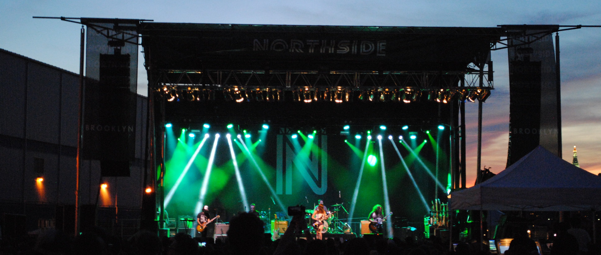

Interests
Outside from work, I love snowboarding, cooking, hiking, seeing live music, watching movies, and travelling. Nothing groundbreaking here.
Old Writing

I've done a little bit of writing about music/movies/media and thought to showcase that here. In college I interned at Zumic.com, a music content aggragator site.
I had the chance to write about new projects I was listening to at the time and cover live concerts.
Doing the math for the pieces I wrote over my time there, roughly 45,000 people viewed my articles.
A few years later, I still wanted to talk about the things I liked, so I started a website with my friends called SEOtakes.com. We all contributed articles about what we were listening to, watching, and reading.
We collaborated on playlists and voted on the top tracks our site would recommend. The hosting fees eventually got too expensive when there weren't enough contributions to keep it going, but I archived some pages here.